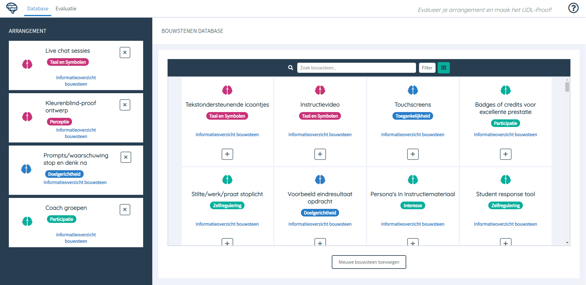
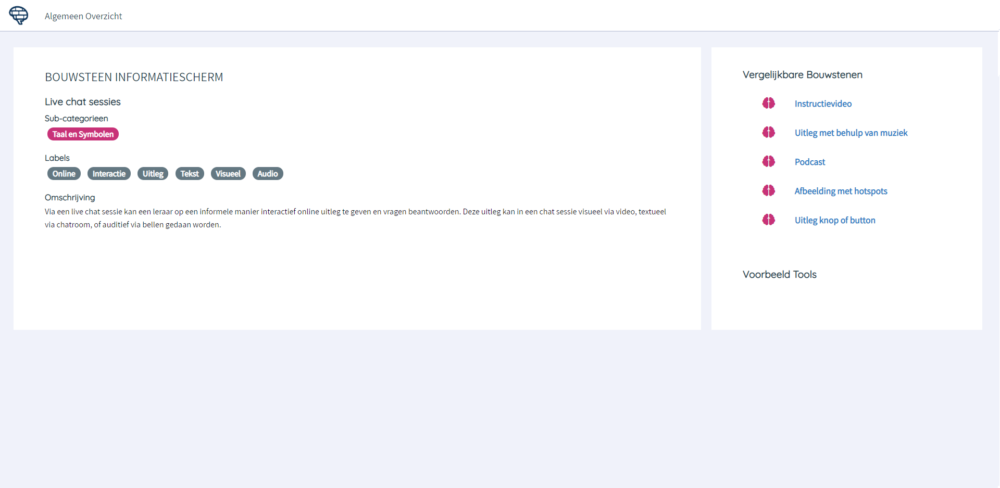
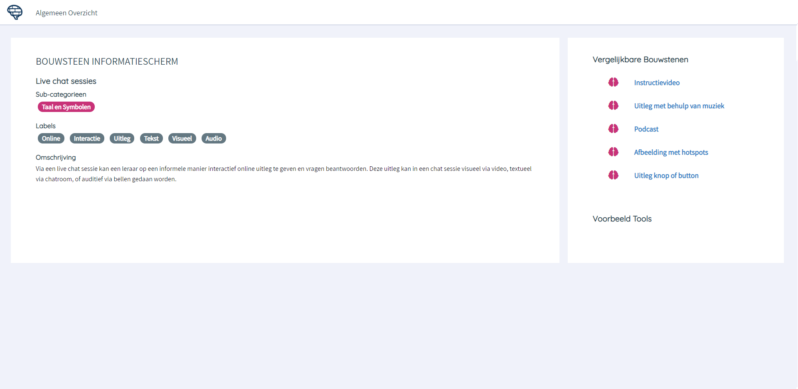
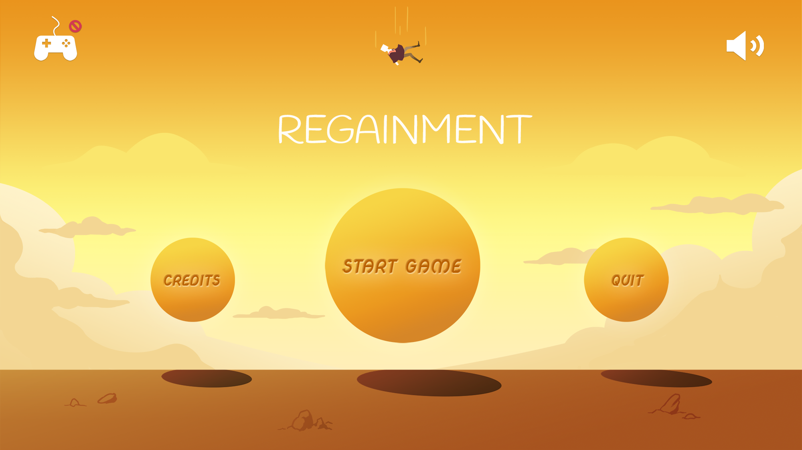
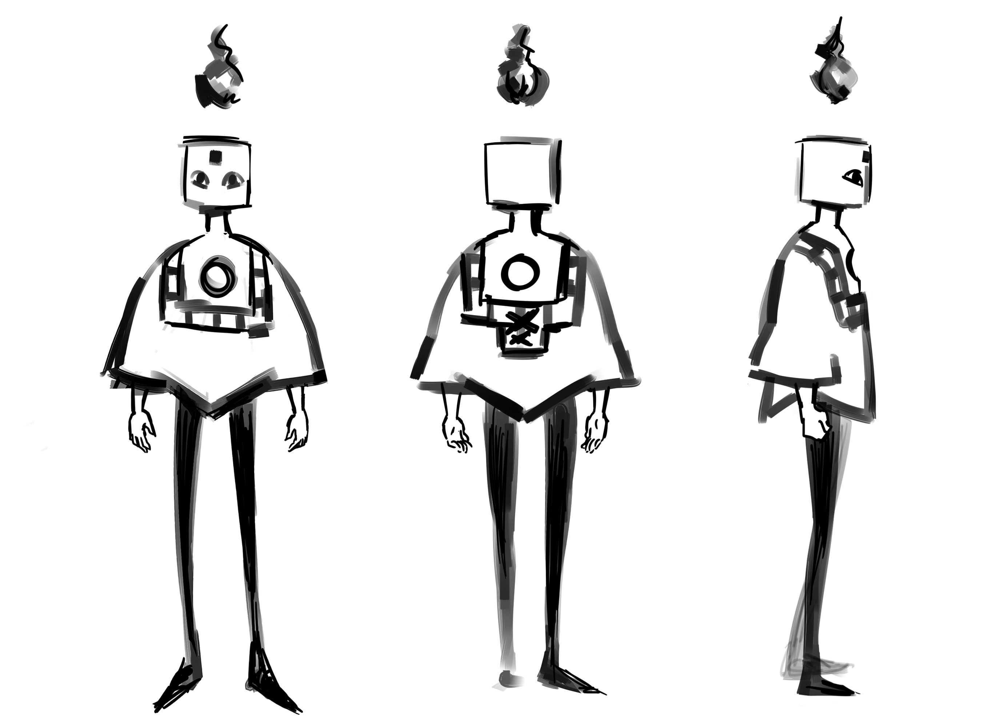

Projects
UDL Assessment Tool
For my master thesis project, I developed a prototype website for teachers to design courses within the Universal Design for Learning (UDL) framework, which is a framework used to promote diversity in education.
 

In short, the conducted user experience research showed that an online shopping-cart concept utilized by webshops could create an intuitive webapplication that teachers could use to assess their course designs on UDL principles. Read my paper for more information.
Regainment
While designing personal projects, I like to think outside the box. One of the ways I do this is by trying to create games that do not encourage players to use violence or fights to solve problems. Regainment is a puzzle platformer developed by me (concept, story, art, animation, design) and Lincy Ellermeijer (programming, game design).
In this game, part of yourself is cast to the spirit realm, and you make it your goal to gather pieces of your mind to make yourself whole again. The game features a story of self acceptance, trust, and betrayal. This game is in early development, as of now there is no gameplay or demo to show.